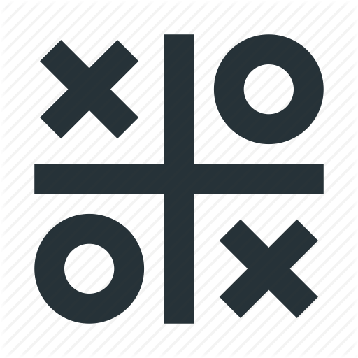

Arianna Leah Fischer
Thinker & Doer
 MONTREAL, QUEBEC · (604) 719-1150 ·
arileah.fischer@gmail.com
MONTREAL, QUEBEC · (604) 719-1150 ·
arileah.fischer@gmail.com
I am an Italian and American recent graduate in Mathematics and Philosophy from the University of British Columbia. I have a strong passion for programming, solving challenging mathematical problems and conducting research in philosophy. In my free time, I read, write, run, and play with cats .
- Fluent: Italian, English
- Advanced: Spanish
- Beginner: French
Experience
Software Engineer Intern
- Carried out technology updates on technologies like Maven, Jenkins, and Java
- Helped manage version control and encouraged best Git practices amongst developers
- Managed multi-team tasks while maintaining efficient communication with all members
- Wrote documentation for developers, held stand-up meetings, and worked both on team and individual projects
Technologies: Git, Python, Java, Maven, Jenkins CI, Ansible CD
Software Engineer
- Updated, built, and tested software to improve autonomous soccer-playing robots
- Wrote documentation specifying commenting conventions, function layout, and use of applications
- Tested plays through grSim, the RoboCup small-size league simulator, and on the field
- Put in charge of fixing bugs and issues in robot's ability to pivot during game
- Implemented functionality through AI, Image Recognition, Control Theory, and Robotics
Technologies: C++, grSim, Linux, GNOME terminal
Research
Philosophy of Religion
The University of British Columbia
- Writing a paper presenting a strong objection to the modal ontologial argument by the renowned philosopher of religion Alvin Plantinga
- Corresponding and working with various experts in the field, including Graham Oppy
- Requires excellent critical thinking skills and a clear written exposition of the argument
- Expected to be published in the prestigious International Journal for Philosophy of Religion
Areas: Philosophy of Religion, Metaethics, Metaphysics, Modal Logic
Projects
 Italy COVID-19 Visualizer
Italy COVID-19 Visualizer
Personal Project
- Creating a dashboard showing current and past coronavirus statistics in all regions in Italy
- Using ArcGIS and React to display data with either Golang or Python to scrape data
Technologies: React, JavaScript, ArcGIS, Golang/Python
React Tic-Tac-Toe
Personal Project
- A simple react app hosting the tic-tac-toe game
- Extending this by making user's opponent an unbeatable AI that uses the minimax algorithm
Technologies: React, JavaScript, HTML/CSS
Portfolio Website
Personal Project
Personal Website based on Bootstrap template
Technologies: JavaScript, HTML/CSS
Butler
Absolute Software
- A command line interface wrapped with Docker and written in Python that automates the building of microservices for developers at the company
- Uses RESTful API to create the remote repository and build job on Jenkins CI and deploys the newservice with Ansible CD
- Reduces overhead time for developers at the company, is highly adaptable and encourages astandard for all developers to follow
Technologies: Python, Docker, Jenkins, Ansible
Dependencies Visualizer
Absolute Software
- A directed graph where nodes are company software tools and technologies and edges represent dependencies between them
- Used Python to scrape the dependencies from the company microservices and placed them in a CV file
- Data from CV file is then represented using Neo4J Graph Database queried with Cypher
- Gives useful information in how to reduce inter-dependencies, remove cyclical dependencies, and generally clean up the company’s codebase
Technologies: Python, NetworkX, Neo4J Graph Database
Education
University of British Columbia
Bachelor of Science
Upperlevel GPA: 4.1/4.33
Awards and Events
Awards
International Major Entrance Scholarship - Awarded to outstanding incoming international students - March 2015
Continuing Scholar - An invite given to the top 10% of students at UBC to attend a reception with President Santa Ono - February 2020
Events
Women Who Code Vancouver - Gave a talk explaining and showcasing Butler, a project I developed independently at Absolute Software - Sep 2018